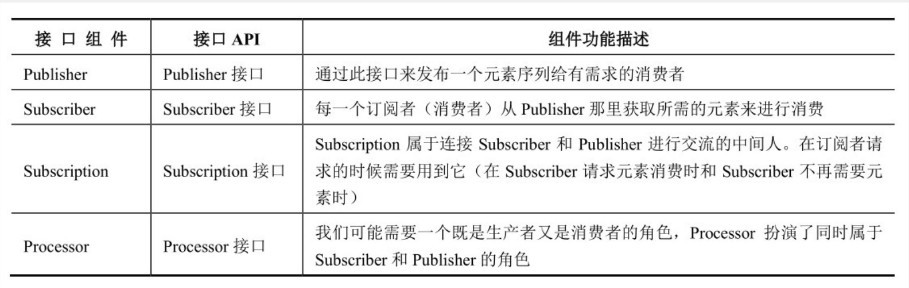
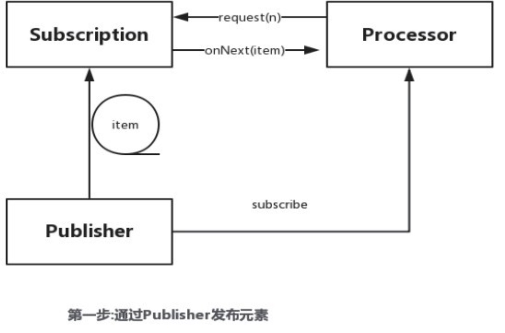
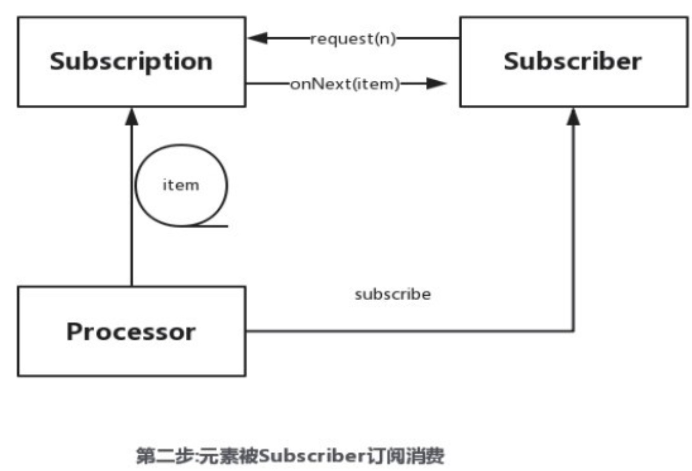

异步编程模式以为这在执行main函数的主线程下同时并行且非阻塞的运行一个或者多个任务，这类似于一个小组负责一个项目，会在主任务进展过程中同时要求组里的一些人执行一些独立的相关的任务，而主线程只需要需要相关的结果。
异步编程模式最主要的好处使程序的性能和相应速度得到大幅提升
并发与并行
并发
很好的利用了CPU时间片的特性，也就是操作系统在当前时间片选择并运行一个任务，接着在下一个时间片内选择并运行另一个任务，把前一个任务设置为等待状态。
并发带来的问题
- 频繁的上下文切换，会导致降低性能，例如Stream中的并行流当任务量很小的时候
- 频繁的开启关闭线程，会产生大量的性能开销，导致降低程序性能
- 当线程大量阻塞在等待IO的过程中，并发会阻塞CPU资源。
- 共享数据问题，并发会带来各个想成中的状态的一致性
并行
在多个CPU核上同一时间运行多个任务，或者一个任务分为多块执行ForkJoin，在单核CPU不存在并行。
总结下，多线程就以为并发，但是并行只发生在将这些线程同一时间调度分配到不通CPU核上执行的时候，也就是说并行是并发的一种特定形式。
并行开发初探
CPU是一个接着一个指令执行任务的，类比项目分解，这里所谓的并行开发就是讲一个大任务拆分成许多部分来同时执行的，这样就更好的利用了多处理器多核环境，而拆分的每个任务都是独立执行的，并且每个任务批次之间的执行顺序也没什么关系，通过并行执行，加快解决速度。
可以想象一下java中的Stream或者linux中的管道，从中抽象出一个好用的模型，然后将并发处理的开关操作作为一环加入。
流 Stream
特性：
- 流中的元素是有顺序的
- 流需要一个数据源，可以是集合、数组、文件等等
- 丰富而流畅的处理操作API，如filter、map、skip、limit等等
- 包含一些引入操作，例如元素迭代
响应式流 Reactive Stream
响应流的特性
1. 异步
在传统的开发模式下，我们是一个方法接着一个方法执行的，最终消耗的时间长是这些方法消耗的总时长，而基于异步编程模式，由于这些操作时同时并行执行的，因此最终消耗的市场是这些操作中消耗时间最长的操作所消耗的时长。
2. 背压 Back Pressure
背压是响应流的一个规范，流中的元素由生产者Producer在一端生产出来，而在另一端由消费者Consumer消费掉，一旦元素的生产速度超过了消费者的消费速度，就会造成挤压，随着这种挤压的不断增加程序性能就会下降直至程序挂掉，背压Back Pressure就是解决这个问题的，虽然他可能会增加元素的处理时间，但是它建立一个弹性机智，允许程序内部按需调节而不至于使程序崩溃。
元素由发布者生产、发布由订阅者货消费者在下游收集截下来，消费者会根据需求发送一个信号给上游，一次来保证可以将所需元素安全的推送给消费者，而发送信号这个动作是异步进行的。对应订阅者来讲其可以通过一个拉取策略来发送更多的请求以获取元素。
响应式开发的设计原则
分而治之的思想，我们讲一个大任务分解成很多小任务并发执行增加处理速度，通过响应式编程设计即可以轻松的做到这一点。
响应式系统提供了注入可响应能力、高可用性、弹性机智、消息驱动和可扩展等机智，从而确保响应式编程不会使系统资源一直被占用，这样可以是系统的其他组件正常运行。
1. 可响应能力
可相应能力是一个应用程序最重要的功能，在编程的时候我们希望能有一个高效、统一的格式，包括对错误的处理响应，类似于Spring的ExceptionHandler
2. 高可用性
我们的应用可能会挂掉，无法提供服务，因此我们可以提供各种各样的集群确保服务不间断。
3. 弹性机制
每当有数据到达时，系统会根据需要分配计算资源，以保证数据得到及时处理。响应式系统提供了一个弹性算法机智，当资源需求增长时，分配的计算资源也随之增长，当资源需求减少是，多分配的资源会随之回收。
4. 消息驱动
消息驱动就是将每个人比作系统的一个个微服务组件，人人之间的交流通过消息进行，响应式系统通过使用异步的消息在各个组件间交流、通信，这样就可以成功的做到各个组件之间的隔离和松耦合，也就可以轻松灵活的维护扩展系统了。
5. 可扩展性
开发中需求是不断的，上面提到过因为消息驱动导致各个模块之间是松耦合的因此扩展起来非常方便。
响应式开发的好处
主要包含以下几点
- 提供应用性能
- 多核机器上，提供计算资源的利用率
- 为异步编程提供了一个更靠谱的可维护方案
- 提供了背压机制
RxJava简介
消息驱动模式
Observable表示数据源，会发出一定数量的元素，发送可能成功或者失败Observer或Subscriber表示订阅者，监听Observable消费其发出的元素Methods表示一系列操作的API，对下发数据进行加工整合onNext表示一个元素被Observable发送出去后通过该方法可以调用每个订阅者onComplete表示在Observable发送所有数据后，会调用这个方法进行收尾onError表示发送过程中出现错误会调用这个方法
Reactor简介
事件驱动模式
Reactor支持完全无阻塞，其主要的目标之一就是解决传统Web开发方案对于异步支持的各种弊病，提供了十分有效的途径支持背压。
Reactor主要模块是reactor-core，Reactor3是Reactor2和RxJava的混合版本。
主要概念
Mono表示一个特殊的Publisher，可以发送0个或1个元素Flux表示一个特殊的Publisher，可以发送0-n个元素- 操作符 表示元素再从Publisher发送给订阅者之前，进行的一些处理
Java9中的响应式编程
Java9 目前已经开始支持响应式编程，主要为java.util.concurrent.Flow类，其中所包含的接口和定义的静态方法都是用来支持Flow控制编程的。
Java9中的响应式编程接口



由图可知Publisher用于发布元素，并将元素推送给Processor,Processor在将元素推送给Subscriber，Subscriber通过onNext方法接受元素。
Processor通过调用Subscription::request方法来从Publisher请求元素，此时Processor作为订阅者。
package com.lazyfighter.flow;
import java.util.concurrent.CopyOnWriteArrayList;
import java.util.concurrent.ExecutorService;
import java.util.concurrent.Flow;
import java.util.concurrent.Future;
public class DockerXDemoPublisher<T> implements Flow.Publisher, AutoCloseable {
private ExecutorService executorService;
private CopyOnWriteArrayList<DockerXDemoSubscription> list = new CopyOnWriteArrayList<DockerXDemoSubscription>();
public DockerXDemoPublisher(ExecutorService executorService) {
this.executorService = executorService;
}
@Override
public void close() {
list.forEach(e -> {
e.future = executorService.submit(() -> e.subscriber.onComplete());
});
}
public void submit(T item) {
System.out.println("*********开始发布元素item : "+ item + "**********");
list.forEach(e -> {
e.future = executorService.submit(() -> e.subscriber.onNext(item));
});
}
@Override
public void subscribe(Flow.Subscriber subscriber) {
subscriber.onSubscribe(new DockerXDemoSubscription<T>(subscriber, executorService));
list.add(new DockerXDemoSubscription(subscriber, executorService));
}
static class DockerXDemoSubscription<T> implements Flow.Subscription {
private final Flow.Subscriber<? super T> subscriber;
private final ExecutorService executorService;
private Future<?> future;
private T item;
private boolean completed;
public DockerXDemoSubscription(Flow.Subscriber<? super T> subscriber, ExecutorService executorService) {
this.subscriber = subscriber;
this.executorService = executorService;
}
@Override
public void request(long n) {
if (n != 0 && !completed) {
if (n < 0) {
IllegalArgumentException exception = new IllegalArgumentException();
executorService.execute(() -> subscriber.onError(exception));
} else {
future = executorService.submit(() -> subscriber.onNext(item));
}
} else {
subscriber.onComplete();
}
}
@Override
public void cancel() {
completed = true;
if (future != null && !future.isCancelled()) {
this.future.cancel(true);
}
}
}
}
package com.lazyfighter.flow;
import java.util.concurrent.Flow;
public class DockerXDemoSubscriber<T> implements Flow.Subscriber<T> {
private String name;
private Flow.Subscription subscription;
private long bufferSize;
long count;
@Override
public void onSubscribe(Flow.Subscription subscription) {
this.subscription = subscription;
subscription.request(bufferSize);
System.out.println("开始onSubscribe订阅");
try {
Thread.sleep(100);
} catch (InterruptedException e) {
}
}
@Override
public void onNext(T item) {
System.out.println(" ##### " + Thread.currentThread().getName() + " ----- name :" + name + "item: " + item);
try {
Thread.sleep(100);
} catch (InterruptedException e) {
}
}
@Override
public void onError(Throwable throwable) {
throwable.printStackTrace();
}
@Override
public void onComplete() {
System.out.println("completed");
}
public String getName() {
return name;
}
public Flow.Subscription getSubscription() {
return subscription;
}
public long getBufferSize() {
return bufferSize;
}
public DockerXDemoSubscriber(long bufferSize, String name) {
this.name = name;
this.bufferSize = bufferSize;
}
}
package com.lazyfighter.flow;
import java.util.List;
import java.util.concurrent.ExecutorService;
import java.util.concurrent.ForkJoinPool;
import java.util.concurrent.TimeUnit;
import java.util.stream.IntStream;
public class main {
public static void main(String[] args) {
ExecutorService forkJoinPool = ForkJoinPool.commonPool();
try (DockerXDemoPublisher<Integer> publisher = new DockerXDemoPublisher<>(forkJoinPool)) {
demoSubscibe(publisher, "One");
demoSubscibe(publisher, "Two");
demoSubscibe(publisher, "Three");
IntStream.range(1, 5).forEach(publisher::submit);
} finally {
try {
forkJoinPool.shutdown();
int shutDownDelaySec = 1;
System.out.println(".........等待 " + shutDownDelaySec + "秒后结束服务.......");
forkJoinPool.awaitTermination(shutDownDelaySec, TimeUnit.SECONDS);
} catch (Exception e) {
e.printStackTrace();
} finally {
System.out.println("shut down now");
List<Runnable> runnables = forkJoinPool.shutdownNow();
System.out.println("还剩" + runnables.size() + "个任务等待执行");
}
}
}
private static void demoSubscibe(DockerXDemoPublisher<Integer> publisher, String subscriberName) {
DockerXDemoSubscriber<Integer> subscriber = new DockerXDemoSubscriber<>(4L, subscriberName);
publisher.subscribe(subscriber);
}
}